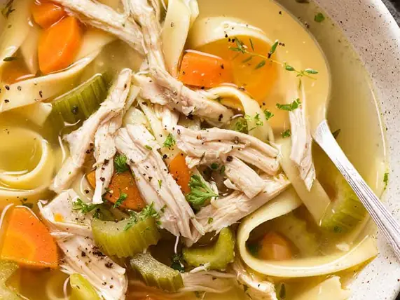

Фото: Nichijyou123, CC BY-SA 4.0

Суп-лапша с курицей по-азиатски
Прозрачный бульон с имбирём, яичной лапшой и соевым соусом
45 мин4 порц.266 ккал на порциюБ 30 · Ж 3 · У 30Азиатская кухня
Продукты на 4 порц.
- Куриное филе400 г
- Вода1500 мл
- Яичная лапша150 г
- Морковь1 шт
- Имбирь20 г
- Чеснок2 зуб.
- Соевый соус3 ст. л.
- Зелёный лук0,5 пучка
- Яйцо куриное по желанию2 шт
- Перец чили по желанию0,5 шт
- Сольпо вкусу
Как готовить
- Курицу залейте холодной водой, добавьте имбирь кружками и раздавленный чеснок. Доведите до кипения, снимите пену и варите 25 минут на слабом огне.
- Выньте курицу, разберите на волокна. Бульон процедите.
- Морковь нарежьте тонкой соломкой и опустите в кипящий бульон на 3 минуты.
- Добавьте лапшу и варите по инструкции на упаковке, 3-4 минуты.
- Влейте соевый соус, верните курицу, попробуйте и досолите.
- Яйца, если используете, сварите отдельно 7 минут и разрежьте пополам. Разлейте суп, положите яйцо, посыпьте луком и колечками чили.
Совет. Лапшу варите прямо перед подачей: в остывшем супе она разбухает. Если готовите впрок, храните лапшу и бульон отдельно.